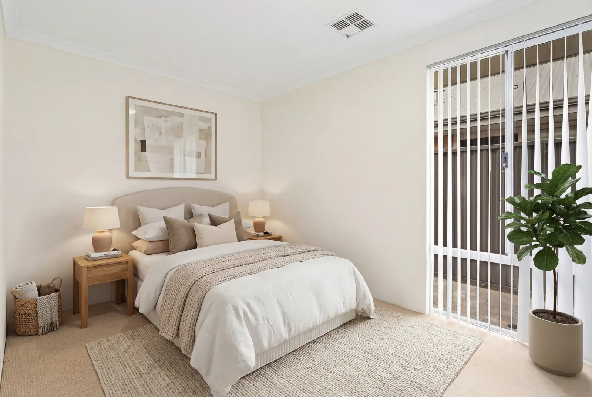
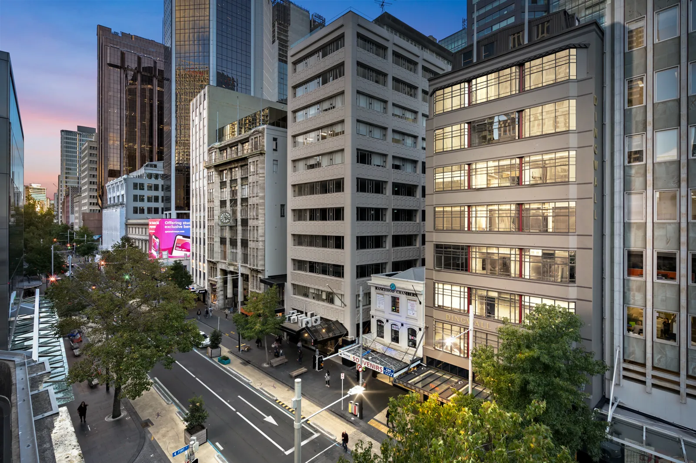

Perth virtual staging & photo editing
Virtual Staging Perth
Furnish an empty room, declutter an occupied one, or turn an afternoon exterior into twilight — from $1.50 an image, rendered in minutes on Baker Studio.
Virtual staging in Perth costs from $1.50 per image through Baker Studio, Baker Production's self-serve staging and editing platform, with results rendered in minutes. Premium human-built 3D staging is $25 per image. Decluttering, object removal, day-to-dusk conversion and rain cleanup are available at the same per-image rates. Every enhanced image is automatically marked as virtually enhanced. Prices include GST.
Furnish an empty room in minutes, not days
An empty room does not photograph as potential — it photographs as small. Buyers cannot scale a space without something in it to scale against, which is why vacant listings consistently under-perform identical furnished ones. Physical styling solves that and costs thousands. Virtual staging solves most of it for the price of a coffee.
Baker Studio is our own platform, built because the traditional editing-desk model — upload, wait 24 to 48 hours, review, request a revision, wait again — does not fit how a Perth agent actually works. You upload, choose a mode and a style, and the render comes back in two to five minutes. If it is not right, run it again.
It does more than furniture. Decluttering clears an occupied room without stripping it bare. Object removal takes out the bins, the cords and the car in the driveway. Day-to-dusk turns a flat afternoon exterior into twilight. Rain cleanup rescues a shoot that happened on the wrong Perth winter morning — drying the paving and lifting the sky while leaving genuine stains and cracks exactly where they are.
What Baker Studio does
Self-serve, per image, rendered in minutes.
- Virtual staging — furnish an empty room
- Decluttering — tidy an occupied room without stripping it
- Object removal — bins, cords, cars, clutter
- Day-to-dusk — daytime exterior to twilight
- Rain & wet-weather cleanup — dry the paving, lift the sky
- Exterior cleanup — greener lawns, cleaner driveways
- 2D and 3D floor plans — six presentation styles
- 3D staging — premium human-built renders at $25/image
Before and after



More recent work in the Baker Production gallery.
What it costs
| Service | Price (inc. GST) |
|---|---|
| Baker Studio — staging, declutter, day-to-duskSelf-serve, per image, rendered in minutes. | from $1.50/image |
| Baker Studio — 3D stagingPremium human-built 3D render. | $25/image |
| Virtual staging added to a shootWe handle it for you as part of the booking. | $25/image |
| Decluttering added to a shootObject and clutter removal, handled for you. | $10/image |
| Day to dusk added to a shootConversion handled for you. | $5/image |
Self-serve rates through Baker Studio are lower than shoot add-on rates because you run the render yourself. All prices include GST. Prices last checked 24 August 2026.
Disclosure — how we keep you safe
Australian Consumer Law prohibits misleading or deceptive conduct and false representations about property. A virtually staged photograph that a buyer reasonably reads as a photograph of the room as it stands is exactly the kind of representation that gets an agency into trouble.
So Baker Studio marks it for you. Every enhanced image comes back with a clear disclaimer baked into the bottom corner — not a line in the fine print that gets lost when the image is uploaded to a portal. Your agency may also have its own wording requirement; use both.
This is general information, not legal advice. If you are unsure how disclosure applies to a particular campaign, check with your licensee or REIWA.
Where we shoot
Baker Production covers the Perth metropolitan area — from Alkimos in the north to Rockingham in the south, the coast through to the Perth Hills. Travel inside that area is included in the price.
Outside that range — Mandurah, Peel, the South West, regional WA — call 0466 789 522 and ask. We travel for the right job.
Virtual staging in Perth — common questions
Stage your first image in minutes.
Baker Studio is self-serve, priced per image from $1.50, and every result is marked as virtually enhanced.